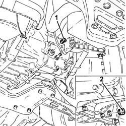
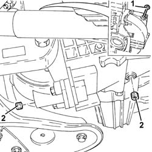
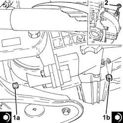
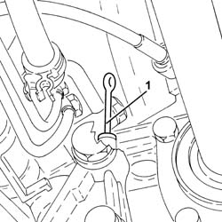
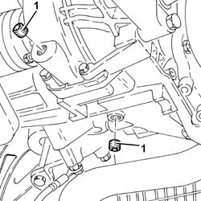
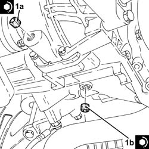
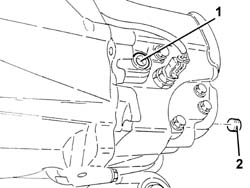

0010T40 MANUAL GEARBOX OIL CHECK LEVEL AND TOP UP IF NECESSARY
- Path
- Procedures > 00 MAINTENANCE > 0010 UNITA' NUOVE E MANUT. PROGRAMMATA > 0010T VEHICLE OIL AND FLUIDS > 0010T40 MANUAL GEARBOX OIL CHECK LEVEL AND TOP UP IF NECESSARY
- Kind
- repair procedure (removal / refitting; the operation number is the code)
- Applies to
- all engines; all production periods
- Interactive page
- https://sloeber94.github.io/elrnDB-aGt/en/#/125000838
Applies to: engines: 2.0 JTS; all production periods
Position the vehicle on a lift.
Proceed with the removal
Op. 7055B54 UNDER-ENGINE GUARD - R R.
1. Remove the gearbox filler cap.
2. Unscrew the oil drain plug and allow the oil to drain out into a suitable container.

Applies to: engines: 2.0 JTS; all production periods
Clean the drain plug and tighten it to the recommended torque.
Fastening | Component | Ø | Value (daNm) | |
|---|---|---|---|---|
- | Drain plug | GEAR CASING PADS | M22 | (Differential side) 2.9 - 4.3 |
Refill the gearbox with the specified fluid through the filler hole.
Type | Component | Description | Qty. | |
|---|---|---|---|---|
- | Oil [l] | MANUAL GEARBOX/DIFFERENTIAL | TUTELA CAR ZC 75 SYNTH | 2.0 |
Check the oil level reaches the lower edge of the filler hole, then clean the plug and tighten it to the specified torque.
Fastening | Component | Ø | Value (daNm) | |
|---|---|---|---|---|
- | Filler cap | GEAR CASING PADS | M22 | (Differential side) 2.9 - 4.3 |
Proceed with the refitting
Op. 7055B54 UNDER-ENGINE GUARD - R R.
Remove the vehicle from the lift.
Applies to: engines: 3.2 V6; all production periods
Position the vehicle on a lift.
Proceed with the removal
Op. 7055B54 UNDER-ENGINE GUARD - R R.
1. Remove the gear oil dipstick.
2. Unscrew the oil drain plug and allow the oil to drain out into a suitable container.

Applies to: engines: 3.2 V6; all production periods
1. Clean drain plugs (1a) and (1b) and tighten to the specified torque.
Fastening | Component | Ø | Value (daNm) | |
|---|---|---|---|---|
1a | Drain plug | GEAR CASING PADS | M18 | (Differential side) 1.6 - 2.6 |
Fastening | Component | Ø | Value (daNm) | |
|---|---|---|---|---|
1b | Drain plug | GEAR CASING PADS | M22 | (Manual gearbox/differential union mount side) 3.0 ÷4.8 |
Refill the gearbox with the specified fluid through the oil dipstick hole.
Type | Component | Description | Qty. | |
|---|---|---|---|---|
- | Oil [l] | MANUAL GEARBOX/DIFFERENTIAL | TUTELA CAR ZC 75 SYNTH | 2.0 |
2. Check the oil level using the dipstick, then insert it fully home in its seat.

Applies to: engines: 3.2 V6; all production periods
Proceed with the refitting
Op. 7055B54 UNDER-ENGINE GUARD - R R.
Remove the vehicle from the lift.
Applies to: engines: 1.9 JTD 16V; all production periods
Position the vehicle on a lift.
Proceed with the removal
Op. 7055B54 UNDER-ENGINE GUARD - R R.
1. Remove the gear oil dipstick.

Applies to: engines: 1.9 JTD 16V; all production periods
1. Unscrew the oil drain plug and allow the oil to drain out into a suitable container.

Applies to: engines: 1.9 JTD 16V; all production periods
1. Clean drain plugs (1a) and (1b) and tighten to the specified torque.
Fastening | Component | Ø | Value (daNm) | |
|---|---|---|---|---|
1a | Drain plug | GEAR CASING PADS | M18 | (Differential side) 1.6 - 2.6 |
Fastening | Component | Ø | Value (daNm) | |
|---|---|---|---|---|
1b | Drain plug | GEAR CASING PADS | M22 | (Manual gearbox/differential union mount side) 3.0 ÷4.8 |
Refill the gearbox with the specified fluid through the oil dipstick hole.
Type | Component | Description | Qty. | |
|---|---|---|---|---|
- | Oil [l] | MANUAL GEARBOX/DIFFERENTIAL | TUTELA CAR ZC 75 SYNTH | 2.0 |

Applies to: engines: 1.9 JTD 16V; all production periods
Check the oil level using the dipstick, then insert it fully home in its seat.
Proceed with the refitting
Op. 7055B54 UNDER-ENGINE GUARD - R R.
Remove the vehicle from the lift.
Applies to: engines: 1.8 T.SPARK; all production periods
- Position the vehicle on a lift.
- Remove the gearbox filler cap.
- Unscrew the oil drain plug and allow the oil to drain out into a suitable container.

Applies to: engines: 1.8 T.SPARK; all production periods
- Clean the drain plug and tighten it to the recommended torque.
Fastening | Component | Ø | Value (daNm) | |
|---|---|---|---|---|
Drain plug | Manual gearbox/diff casing plugs | M22 | (Differential side) 2.9 - 4.3 |
- Refill the gearbox with the specified fluid through the filler hole.
Type | Component | Description | Qty. | |
|---|---|---|---|---|
Oil [l] | MANUAL GEARBOX/DIFFERENTIAL | TUTELA CAR ZC 75 SYNTH | 2.0 |
- Check the oil level reaches the lower edge of the filler hole, then clean the plug and tighten it to the specified torque.
Fastening | Component | Ø | Value (daNm) | |
|---|---|---|---|---|
Filler cap | Manual gearbox/diff casing plugs | M22 | (Differential side) 2.9 - 4.3 |
- Remove the vehicle from the lift.
Topics linked from this page (1)
Topics that link to this page (11)
- 1004D10 POWER UNIT (MANUAL GEARBOX), REMOVED, REMOVE AND RE-BUILD
- 1020D26 FLYWHEEL SIDE OIL SEAL COVER - R+R
- 1020D38 FLYWHEEL SIDE OIL SEAL - REPLACE
- 1024B10 ENGINE FLYWHEEL - R + R FOR VERSIONS WITH MANUAL GEARBOX
- 1810A20 CLUTCH - R + R
- 1820A24 THRUST BEARING LINKAGE - R + R
- 2110A10 MANUAL GEARBOX AND DIFFERENTIAL - R + R
- 2110C22 GEAR INPUT SHAFT SEALS - R R
- 2110D52 L/H FLANGE ON DIFFERENTIAL - R + R WITH DRIVE SHAFT REMOVED
- 2110D53 LEFT HAND FLANGE ON DIFFERENTIAL - R+R
- 2110D74 DIFFERENTIAL L/H INNER DRIVE SHAFT - R + R